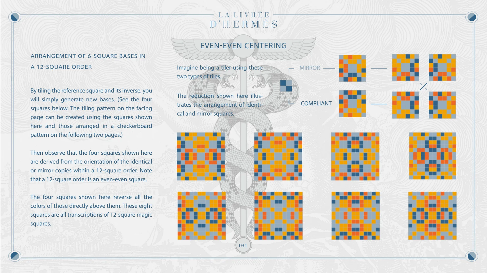

Arithmogeometry
What is arithmogeometry?
Other languages: Français
Arithmogeometry builds magic squares by a geometric rather than arithmetic method: each number is placed as a figure derived from the ansate cross, and the whole transcribes directly into Jacquard weave. The term is proposed by Anibal Edelberto Amiot in La Livrée d'Hermès (2026).
An example: the book's order 12
Plate 031 of the treatise shows eight squares of 12 × 12 cells. Four are order-6 squares set in a frame, as conforming copies or mirrors; the other four invert their colours. The book calls them "the retranscription of order-12 magic squares" (French original). Each cell is a coloured figure, and that drawing is what is woven as it stands on the Jacquard loom.

An order-12 magic square has constant 12 × 145 / 2 = 870. The book counts 64 of them by assembly.
Key results, with their status
- 2 ansate crosses of order 6 — verified (repository log).
- 256 solar squares of order 6, 128 per cross — verified (repository log).
- 64 order-12 magic squares by assembly, constant 870 — verified (repository log).
- 360 layers: 15 axis families × 4 natures × 6 levels — verified (rerun in CI).
- The 256 patterns that have a page draw only 224 distinct grids — verified (rerun in CI).
Each line can be reread in figures and sources (French) and in resultats-etablis.json, with the script that reproduces it and the line it prints.
Further reading: the book, the lexicon, the deposits, the order-6 magic square.